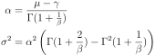
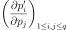
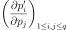

WeibullMuSigma¶
-
class
WeibullMuSigma(*args)¶ Weibull distribution parameters.
- Available constructors:
- WeibullMuSigma(mu=1.0, sigma=1.0, gamma=0.)
Parameters: mu : float
Mean.
sigma : float
Standard deviation
 .
.gamma : float, optional
Shift parameter .
See also
Notes
The native parameters
 and
and  are searched such as:
are searched such as:
Examples
Create the parameters of the Weibull distribution:
>>> import openturns as ot >>> parameters = ot.WeibullMuSigma(1.3, 1.23, -0.5)
Convert parameters into the native parameters:
>>> print(parameters.evaluate()) [1.99222,1.48961,-0.5]
The gradient of the transformation of the native parameters into the new parameters:
>>> print(parameters.gradient()) [[ 1.25624 0.897176 0 ] [ -0.218715 -1.31294 0 ] [ -1.25624 -0.897176 1 ]]
Methods
__call__(…) <==> x(…)evaluate()Compute native parameters values. getClassName()Accessor to the object’s name. getDescription()Get the description of the parameters. getDistribution()Build a distribution based on a set of native parameters. getId()Accessor to the object’s id. getName()Accessor to the object’s name. getShadowedId()Accessor to the object’s shadowed id. getValues()Accessor to the parameters values. getVisibility()Accessor to the object’s visibility state. gradient()Get the gradient. hasName()Test if the object is named. hasVisibleName()Test if the object has a distinguishable name. inverse(inP)Convert to native parameters. setName(name)Accessor to the object’s name. setShadowedId(id)Accessor to the object’s shadowed id. setValues(values)Accessor to the parameters values. setVisibility(visible)Accessor to the object’s visibility state. -
__init__(*args)¶ x.__init__(…) initializes x; see help(type(x)) for signature
-
getClassName()¶ Accessor to the object’s name.
Returns: class_name : str
The object class name (object.__class__.__name__).
-
getDescription()¶ Get the description of the parameters.
Returns: collection :
DescriptionList of parameters names.
-
getDistribution()¶ Build a distribution based on a set of native parameters.
Returns: distribution :
DistributionDistribution built with the native parameters.
-
getId()¶ Accessor to the object’s id.
Returns: id : int
Internal unique identifier.
-
getName()¶ Accessor to the object’s name.
Returns: name : str
The name of the object.
-
getShadowedId()¶ Accessor to the object’s shadowed id.
Returns: id : int
Internal unique identifier.
-
getVisibility()¶ Accessor to the object’s visibility state.
Returns: visible : bool
Visibility flag.
-
gradient()¶ Get the gradient.
Returns: gradient :
MatrixThe gradient of the transformation of the native parameters into the new parameters.
Notes
If we note
 the native parameters and
the native parameters and  the new ones, then the gradient matrix is .
the new ones, then the gradient matrix is .
-
hasName()¶ Test if the object is named.
Returns: hasName : bool
True if the name is not empty.
-
hasVisibleName()¶ Test if the object has a distinguishable name.
Returns: hasVisibleName : bool
True if the name is not empty and not the default one.
-
inverse(inP)¶ Convert to native parameters.
Parameters: inP : sequence of float
The non-native parameters.
Returns: outP :
PointThe native parameters.
-
setName(name)¶ Accessor to the object’s name.
Parameters: name : str
The name of the object.
-
setShadowedId(id)¶ Accessor to the object’s shadowed id.
Parameters: id : int
Internal unique identifier.
-
setValues(values)¶ Accessor to the parameters values.
Parameters: values : sequence of float
List of parameters values.
-
setVisibility(visible)¶ Accessor to the object’s visibility state.
Parameters: visible : bool
Visibility flag.